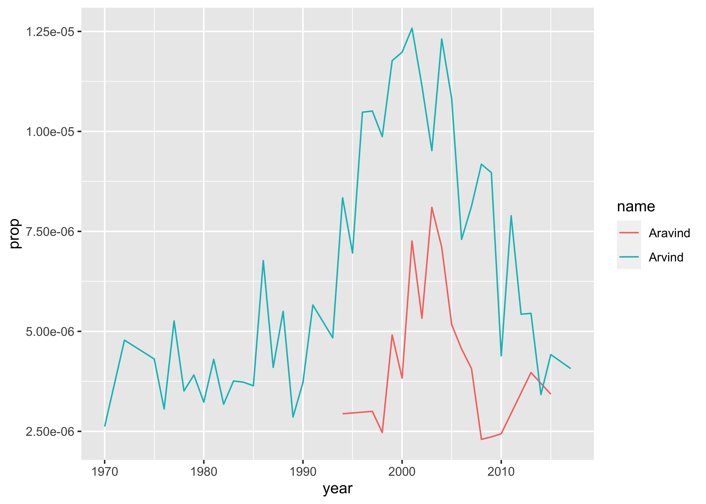

{kind=link}
{kind=link}
install.packages(c("knitr", "dplyr", "ggplot2", "babynames"), dependencies = TRUE)Lab 01 - Installation
Installing and Getting Started with R!
Abstract
Part of my R Workshop course using the idea of metaphors in written language.
Goals
At the end of this Lab, we will:
- have installed R and RStudio on our machines
- understood how to add additional R-packages for specific features and graphic capability
- run code within RStudio and interpret the results
- have learnt to look for help within R and RStudio
Overview
This guide will lead you through the steps to install and use R, a free and open-source software environment for statistical computing and graphics.
What is R?
-
R is the name of the programming language itself, based off S from Bell Labs, which users access through a command-line interpreter (
>)
What is RStudio?
- RStudio is a powerful and convenient user interface that allows you to access the R programming language along with a lot of other bells and whistles that enhance functionality (and sanity).
Our end goal is to get you looking at a screen like this:

Install R
Install R from CRAN, the Comprehensive R Archive Network. Please choose a precompiled binary distribution for your operating system.
Check in
Launch R by clicking this logo. You should see one console with a command line interpreter. Try typing 2 + 2 and check !
Close R.
Install RStudio
Install the free, open-source edition of RStudio: http://www.rstudio.com/products/rstudio/download/
RStudio provides a powerful user interface for R, called an integrated development environment. RStudio includes:
- a console (the standard command line interface:
>), - a syntax-highlighting editor that supports direct code execution, and
- tools for plotting, history, debugging and workspace management.
Check in
Launch RStudio. You should get a window similar to the screenshot you see here, but yours will be empty. Look at the bottom left pane: this is the same console window you saw when you opened R in step @Check-In-R
- Place your cursor where you see
>and typex <- 2 + 2again hit enter or return, then typex, and hit enter/return again. - If
[1] 4prints to the screen, you have successfully installed R and RStudio, and you can move onto installing packages.
Install packages
The version of R that you just downloaded is considered base R, which provides you with good but basic statistical computing and graphics powers. For analytical and graphical super-powers, you’ll need to install add-on packages, which are user-written, to extend/expand your R capabilities. They may be carefully curated by CRAN (which involves a thorough submission and review process), and thus are easy install using install.packages("name_of_package", dependencies = TRUE) in your CONSOLE.
Place your cursor in the CONSOLE again (where you last typed x and [4] printed on the screen). You can use the first method to install the following packages directly from CRAN, all of which we will use:
To install a package, you put the name of the package in quotes as in
install.packages("name_of_package"). Mind your use of quotes carefully with packages.To use an already installed package, you must load it first, as in
library(name_of_package), leaving the name of the package bare (unquoted). You only need to do this once per RStudio session.
You can download all of these at once, too:
A brief aside: c() is a command in R that allows us to combine things into a vector ( one of the ways data is represented in R)
c("hello", "my", "name", "is", "arvind")[1] "hello" "my" "name" "is" "arvind"c(1:3, 20, 50)[1] 1 2 3 20 50- If you want help, no quotes are needed:
help(name_of_package)or?name_of_package. - If you want the citation for a package (and you should give credit where credit is due), ask R as in
citation("name_of_package").
Make a name plot
The webpage you are looking at is derived from a R Quarto doc that you can download, edit and compute with. We will meet R Quarto docs in the next class.
Create a new Quarto Document using the `File -> New File -> Quarto Document` menu.
Change the author name to your own!
Delete all the content below the YAML header ( stuff enclosed in three dashes ---)
Paste this code chunk inside your Quarto document:
Let us greet our data first !!
glimpse(babynames) # dplyrRows: 1,924,665
Columns: 5
$ year <dbl> 1880, 1880, 1880, 1880, 1880, 1880, 1880, 1880, 1880, 1880, 1880,…
$ sex <chr> "F", "F", "F", "F", "F", "F", "F", "F", "F", "F", "F", "F", "F", …
$ name <chr> "Mary", "Anna", "Emma", "Elizabeth", "Minnie", "Margaret", "Ida",…
$ n <int> 7065, 2604, 2003, 1939, 1746, 1578, 1472, 1414, 1320, 1288, 1258,…
$ prop <dbl> 0.07238359, 0.02667896, 0.02052149, 0.01986579, 0.01788843, 0.016…head(babynames) # base Rtail(babynames) # samenames(babynames) # same[1] "year" "sex" "name" "n" "prop"If you have done the above and produced sane-looking output, you are ready for the next bit. Use the code below to create a new data frame called arvind.
The first bit makes a new dataset called
my_name_datathat is a copy of thebabynamesdataset- the%>%tells you we are doing some other stuff to it later.The second bit
filtersourbabynamesto only keep rows where thenameis either Arvind or Aravind (read|as “or”.)The third bit applies another
filterto keep only those where sex is male.
Let’s check out the data.
my_name_dataglimpse(my_name_data)Rows: 61
Columns: 5
$ year <dbl> 1970, 1972, 1975, 1976, 1977, 1978, 1979, 1980, 1981, 1982, 1983,…
$ sex <chr> "M", "M", "M", "M", "M", "M", "M", "M", "M", "M", "M", "M", "M", …
$ name <chr> "Arvind", "Arvind", "Arvind", "Arvind", "Arvind", "Arvind", "Arvi…
$ n <int> 5, 8, 7, 5, 9, 6, 7, 6, 8, 6, 7, 7, 7, 13, 8, 11, 6, 8, 12, 10, 1…
$ prop <dbl> 2.620e-06, 4.780e-06, 4.310e-06, 3.060e-06, 5.260e-06, 3.510e-06,…Again, if you have sane-looking output here, move along to plotting the data!
Now if you did this right, you will not see your plot!
Because we saved the ggplot with a name (plot), R just saved the object for you. But check out the top right pane in RStudio again: under the Environment pane you should see plot, so it is there, you just have to ask for it. Here’s how:
plot 
Make a new name plot
Edit my code above to create a new dataset. Pick 2 names to compare how popular they each are (these could be different spellings of your own name, like I did, but you can choose any 2 names that are present in the dataset). Make the new plot, changing the name of the first argument arvind in ggplot() to the name of your new dataset.